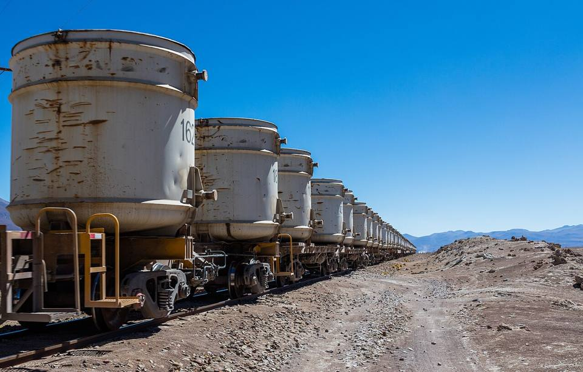
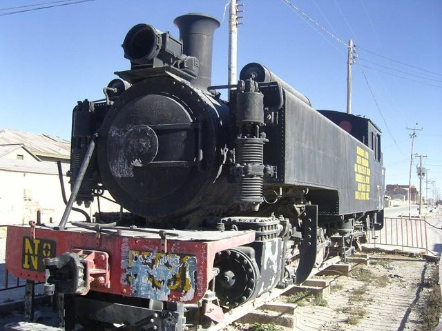
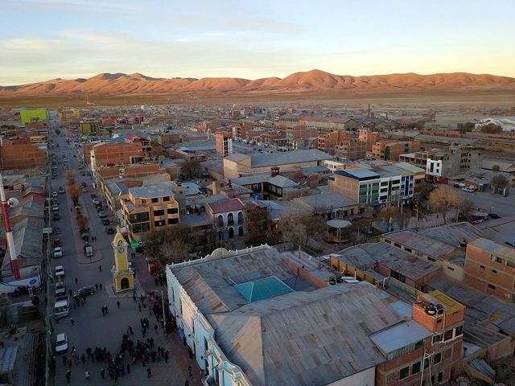
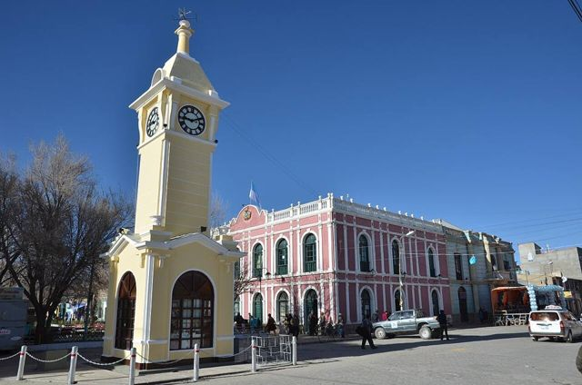
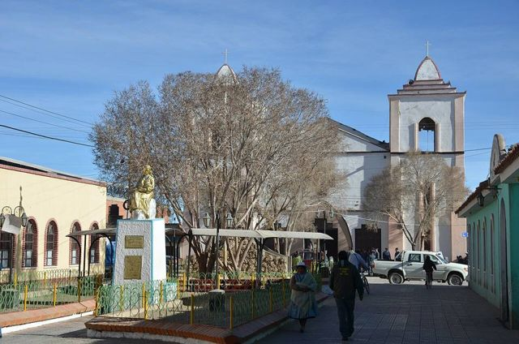
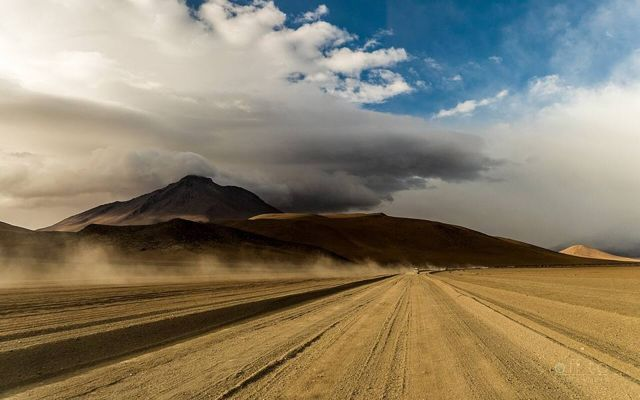
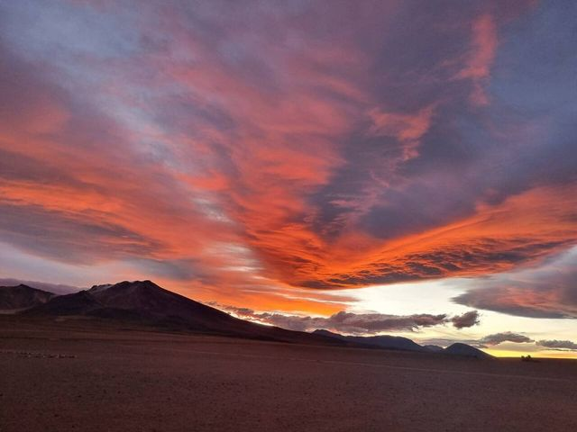

Uyuni
Potosí Department · Altiplano, lakes and salt flats

Uyuni is a small, windswept Altiplano town that lives to the rhythm of the Salar tours. Most people spend a night before or after the tour, but the cemetery of rusting trains just outside town is worth a visit at sunset, and the small restaurants serve good quinoa and llama dishes.
Things to do
- Train cemetery
- Book your Salar tour (compare several agencies)
What to eat
- Llama meatLean and tasty meat, often grilled or as “charque” (dried). Very common in Uyuni and on the Altiplano.
- Quinoa realThe world's best quinoa grows around the Salar: in soups, patties or as a side.
- Quinoa soupA hot soup of quinoa and vegetables, served in refuges and high-altitude comedores. Perfect when it's cold.
Also here
- Border Ollagüe (to Calama)Between Uyuni and Calama, among the volcanoes. A few buses a week from Uyuni: check the days before you go.
How to get to Uyuni
Salar de Uyuni 4x4 tour or excursion · Included in the tour
4x4 tour with a driver-guide and a cook. Book in Uyuni (compare agencies) or in advance.
La Paz Flight · 1 h flight
BoA flights almost every day.
Saves you a night on the bus.
Potosí Road (bus, car) · 4 h
Frequent buses.
Tupiza Road (bus, car) · 4 to 6 h
Daily buses.
Tupiza Train · 5 h 30
The same FCA line as from Oruro (continuing to Villazón).
Oruro Road (bus, car) · 6 to 7 h
Buses from the Oruro bus terminal.
Oruro Train · 7 h
FCA trains, the Expreso del Sur and the Wara Wara del Sur, only a few departures a week (check times at fca.com.bo).
The most comfortable and scenic option: flamingos along Lake Poopó.
La Paz Road (bus, car) · 9 to 11 h (overnight)
Tourist night buses (Todo Turismo, Trans Omar…) from the La Paz bus terminal.
Photos of Uyuni









.jpeg){kind=link}


More places in this region
 Sajama National ParkBolivia's highest peak (6,542 m), geysers, hot springs and llamas.
Sajama National ParkBolivia's highest peak (6,542 m), geysers, hot springs and llamas. Curahuara de CarangasThe “Sistine Chapel of the Altiplano”: an adobe church covered in murals.
Curahuara de CarangasThe “Sistine Chapel of the Altiplano”: an adobe church covered in murals. OruroAn Altiplano mining city, famous for its UNESCO-listed carnival. Starting point of the train to Uyuni.
OruroAn Altiplano mining city, famous for its UNESCO-listed carnival. Starting point of the train to Uyuni. Obrajes and Capachos hot springsNatural hot-water pools on the Altiplano, less than an hour from Oruro.
Obrajes and Capachos hot springsNatural hot-water pools on the Altiplano, less than an hour from Oruro. Machacamarca railway museumOld steam locomotives and the history of the mining railways, south of Oruro.
Machacamarca railway museumOld steam locomotives and the history of the mining railways, south of Oruro. Lakes Uru Uru and PoopóShallow Altiplano lakes on Oruro's doorstep, visited by flamingos.
Lakes Uru Uru and PoopóShallow Altiplano lakes on Oruro's doorstep, visited by flamingos. ChipayaVillage of the Uru-Chipaya, one of the oldest peoples of the Andes, with round earthen houses.
ChipayaVillage of the Uru-Chipaya, one of the oldest peoples of the Andes, with round earthen houses. Coipasa Salt FlatBolivia's second-largest salt flat, wild and almost without visitors.
Coipasa Salt FlatBolivia's second-largest salt flat, wild and almost without visitors. Salar de Uyuni + Sud Lípez (tour)The world's largest salt flat, then the colourful lagoons of the Sud Lípez. The highlight of many trips.
Salar de Uyuni + Sud Lípez (tour)The world's largest salt flat, then the colourful lagoons of the Sud Lípez. The highlight of many trips. TupizaWild West scenery: red canyons, cacti and the last ride of Butch Cassidy.
TupizaWild West scenery: red canyons, cacti and the last ride of Butch Cassidy.- CotagaitaA small green town in a fruit-growing valley, on the road from Potosí to Villazón.
 VillazónThe border with Argentina, facing La Quiaca: the crossing travellers use most.
VillazónThe border with Argentina, facing La Quiaca: the crossing travellers use most.